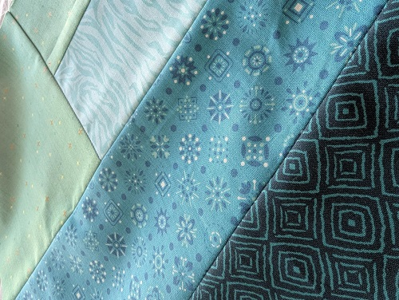
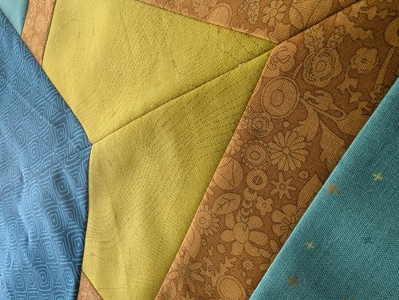

Murder in the Alps M-MQAL
The theme for the 2026 Murder-Mystery Quilt Along is "Murder in the Alps" / "Murder on the Orient Express"
For the un-initiated a MQAL is a type of of social quilting project where the fabric requirements are given but no images of the finished project. Instructions on how to make components of the quilt (blocks) are given at a set schedule. Most often weekly or monthly. There are also MKALs (knit alongs) and I assume MCALS (crochet alongs). I have done a MKAL before but no MCALs, I assume they exist though lol. The term is always pronounced as "em-cal" and I think it's neat that all versions can be pronounced the same whether Q, K, or C. This one is a little different in that each month you are also sent a chapter of a murder mystery that is written specifically to accompany the quilt. Then at the end of the year you can submit your guess for who the murderer is. Correct guesses go into a drawing where you can win some quilting swag.
This isn't the first MQAL I've signed up for but it is the first one I've been able to actively participate in (at least as of 3 months in). A few years ago I signed up for my first one ever "Murder of the Viking" but IRL things went to shit very fast and I never was able to even read any of the chapters or complete a single block. I'm hoping I can also finish that project this year since I did at least download the chapters and blocks at the end of the year before I lost access to the site

January: Block 1 "Golden Mirror"
I was just not happy at all with my fabric choices for this one at first. I think I ran into problems because I tried to buy all my fabric locally. So I went with options that worked together but I wasn't in love with. I ordered some fabric online and half of which were never sent and refunded. After 2 swaps I'm much much happier with the end product but alas, one of my swaps seems to be sold out everywhere online and I only bought 1 of the needed 2 yards. Normally I would buy all I needed but after buying 7 yards of the background fabric online (at $11 a yard) that I then immediately realized in person would not work (too directional) I decided from then on that I should only order swatches or the smallest amount the shop sells because funds are tight. I'm hoping I can just complete the blocks as needed and when I run out I can then wait on re-ordering some until it's called for again in a block and maybe hopefully it's restocked.
Status: Complete

February: Block 2 "The Jade Box"
I have nicknamed this block "A comedy of errors in 1/8s inch" because my printout of the pattern pieces was just under 1/8s inch too small and I didn't bother to check the print size guide before cutting into my fabric. I stitched one block together and the too small size has compounded across the piecing and has finished at just under 11.75" when it should be 12.5". I was tilted to say the least. I doubt the remainder of the cut pieces can be reused in other blocks since they are quite small. I think my best option is too just assemble the other blocks for the month and hope that they can still be worked into the final quilt. If not then I'll have to purchase more fabric and remake them :(
Status: May need to remake
March: Block 3 "Dangerous Fan"
So I missed the deadline to post last months block before this one was released so no bonus clues for me.
I'm hoping that this months block goes much much smoother that the previous two. It does involve a curved piece which I have no experience doing in quilting but I do have experience with in with sewing costumes, clothes, dolss, etc. I don't have a good "Persimmon" fabric which is needed so that will need to be purchased. I enjoy the local quilting shop but at $15 a yard it's painful for my wallet.
Status: In progress